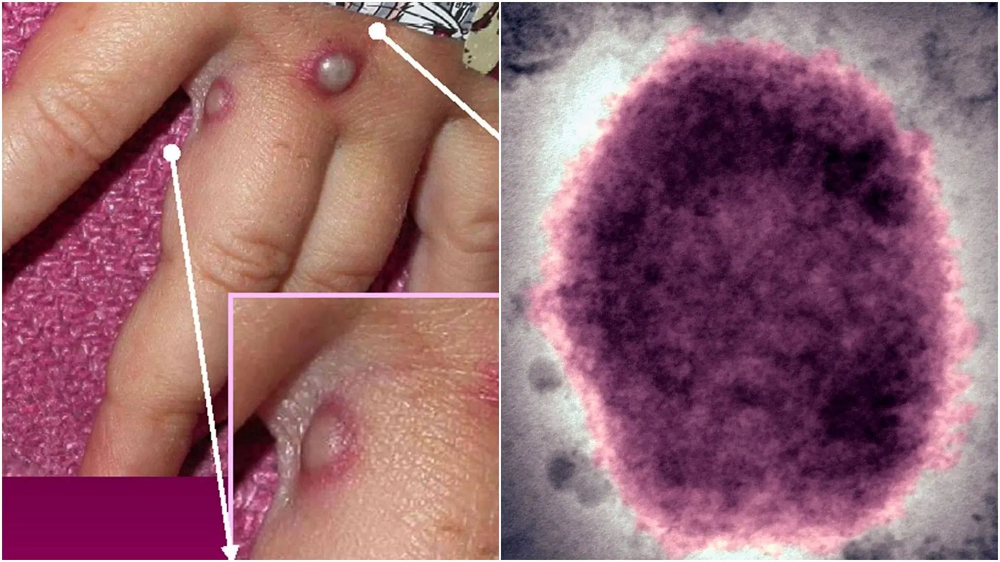
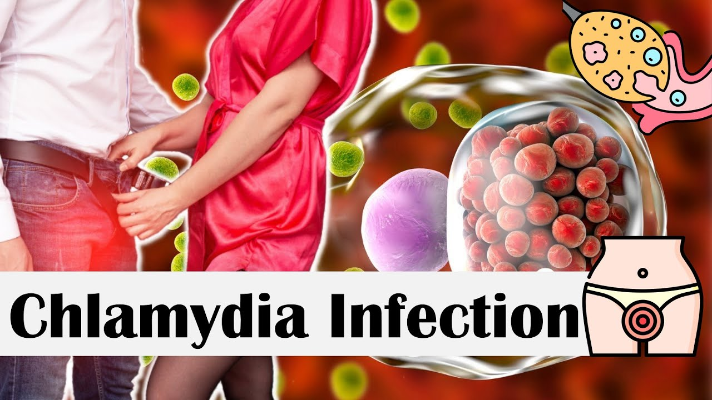
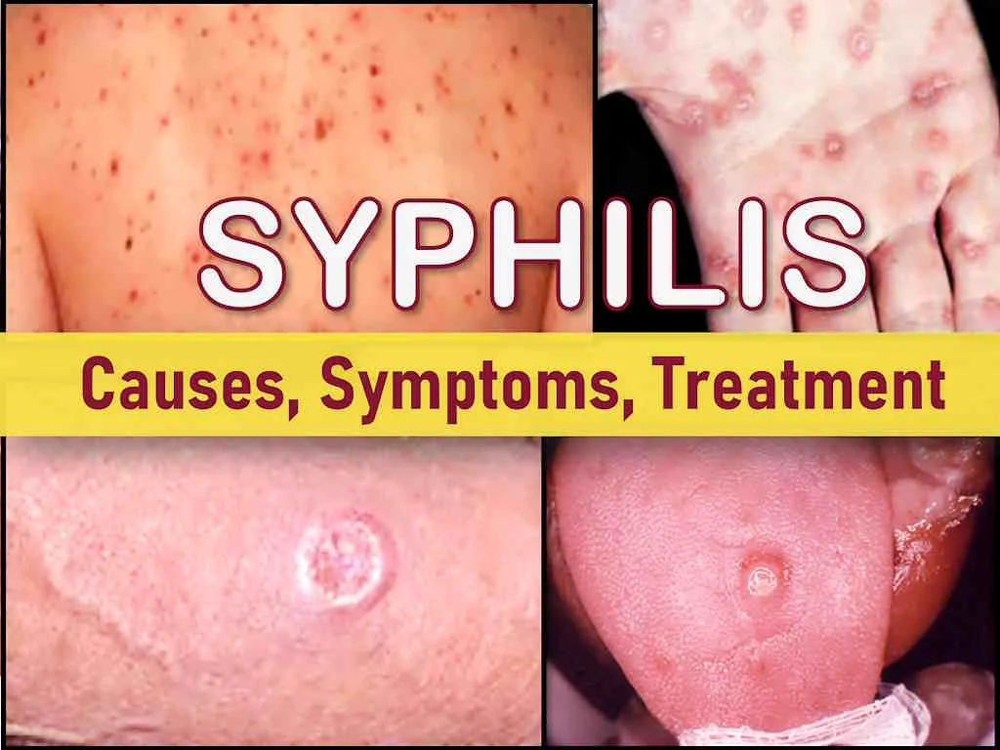
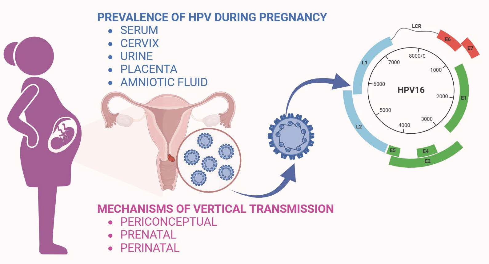
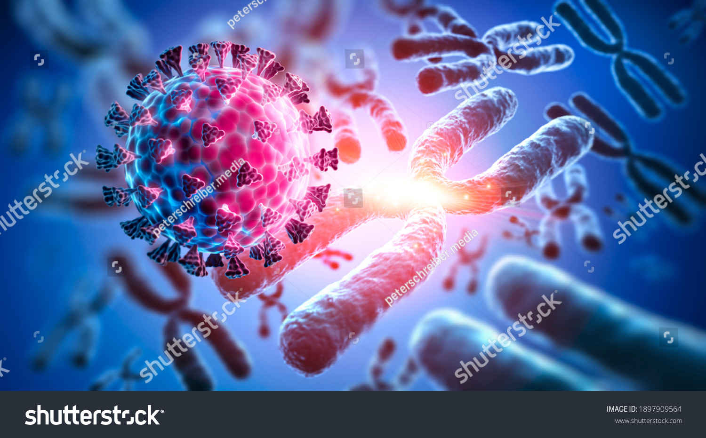

Sexually transmitted infections (STIs), previously known as sexually transmitted diseases (STDs), are infections spread through
sexual contact, including vaginal, anal, and oral sex. They are caused by bacteria, viruses, or parasites
and can lead to various health problems if left untreated. Many STIs have no symptoms, making it crucial for
sexually active individuals to get tested.
Treatment options vary depending on the type of STI, with
some being curable (e.g., chlamydia, gonorrhea, syphilis) and others being manageable
but not curable (e.g., HIV, herpes).
Let us look at the general information on
STIs including transmission, treatmentand prevention of the common STIs
How STIs are Spread
1.Sexual contact.
Primarily through vaginal, anal, and oral sex.
2.Blood or bodily fluids. Some STIs, like HIV, can be transmitted through contact with infected blood or other bodily fluids.
3.Mother-to-child transmission. Certain STIs, like HIV and syphilis, can be passed from mother to child during pregnancy, childbirth, or breastfeeding.
Symptoms of STIs
Many STIs are asymptomatic, meaning people can be infected without knowing it.
When symptoms do occur, they can vary depending on the type of STI and can include:
1.Discharge from the penis or vagina.
2.Painful urination.
3.Genital sores or bumps.
4.Itching or burning in the genital area.
5.Fever or swollen lymph nodes.
Importance of Testing
Regular STI testing is crucial for early detection and treatment, especially if you are sexually active.
Testing can help prevent the spread of STIs to partners and reduce the risk of complications.
If you have any concerns about STIs, it's important to talk to a healthcare professional.
Prevention of STIs.
1.Condoms.
Using condoms correctly and consistently during sexual activity can significantly reduce the risk of STIs.
2.Vaccines.
Vaccines are available for some STIs, such as HPV and hepatitis B, to prevent infection.
3.Abstinence.
Abstaining from sexual activity is the only way to completely avoid STIs.
4.Monogamous relationships.
Having a sexual relationship with only one partner who has been tested and is free of STIs can significantly reduce the risk.
5.Limiting sexual partners.
Reducing the number of sexual partners can also lower the risk of exposure to STIs.
6.Avoiding drug use.
Sharing needles when injecting drugs can increase the risk of STIs, including HIV and hepatitis C.
Treatment of STIs
1.Curable STIs.
Many STIs caused by bacteria or parasites, such as chlamydia, gonorrhea, and syphilis, can be cured with antibiotics or other medications.
2.Treatable but not curable STIs.
Viral STIs like HIV, herpes, and HPV can be managed with medications that can reduce symptoms and prevent complications.
Sexually Transmitted Infections - HIV.gov
STIs—also commonly referred to as sexually transmitted diseases (STDs)—are infections that are spread from person to person through...
HIV.gov
Sexually transmitted infections (STIs)
The majority of STIs have no symptoms. When they are present common symptoms of STIs are vaginal or urethral discharge, genital ul...
World Health Organization (WHO)
HIV and Sexually Transmitted Infections (STIs) - HIVinfo
26 Aug 2021 — What is an STD? STD stands for sexually transmitted disease, also called sexually transmitted infections (STIs). STDs a...
National Institutes of Health (NIH) (.gov)
Show all
This is for informational purposes only. For medical advice or diagnosis, consult a professional. Generative AI is experimental.
Gonorrhea is a sexually transmitted infection (STI) caused by the bacterium Neisseria gonorrhoeae.
It can infect both men and women and commonly affects the urethra, rectum, throat, and cervix.
If left untreated, gonorrhea can lead to severe health complications, including infertility and an
increased risk of contracting HIV.

Causes and Transmission
Gonorrhea is transmitted through unprotected sexual contact with an infected person. This includes:
Vaginal sex
Anal sex
Oral sex
Sharing sex toys (if not cleaned or covered with a condom)
A pregnant woman with gonorrhea can pass the infection to her baby during childbirth, leading to
serious eye infections in the newborn.
Symptoms of Gonorrhea
Many people with gonorrhea do not show symptoms, making it easy to spread unknowingly. When symptoms do appear, they vary by gender.
Symptoms in Men
Painful urination (burning sensation while peeing)
White, yellow, or green discharge from the penis
Swollen or painful testicles (though rare)
Frequent urination
Symptoms in Women
Increased vaginal discharge (often yellow or greenish)
Painful urination
Pain during sex
Lower abdominal pain
Bleeding between periods
Symptoms in Other Areas of the Body
Rectal infection: Discomfort, itching, discharge, or bleeding
Throat infection: Often no symptoms, but may cause a sore throat
Eye infection: Redness, pain, or discharge (in rare cases)
Complications of Untreated Gonorrhea
If left untreated, gonorrhea can lead to serious health problems, including:
Pelvic Inflammatory Disease (PID) – In women, it can spread to the uterus and fallopian tubes, causing infertility or ectopic pregnancy.
Infertility in Men – Can cause epididymitis (swelling of the tubes near the testicles), leading to permanent infertility.
Increased HIV Risk – Having gonorrhea increases the risk of contracting and transmitting HIV/AIDS.
Disseminated Gonococcal Infection (DGI) – If the bacteria spread through the bloodstream, it can cause joint pain, skin rashes, or even life-threatening complications.
Diagnosis and Testing
Gonorrhea is diagnosed through:
Urine test (for urethral infection)
Swab test from the cervix, throat, anus, or urethra
Doctors recommend regular STI screening, especially if you are sexually active with multiple partners or have unprotected sex.
Treatment of Gonorrhea
Gonorrhea is curable with antibiotics, but treatment must be completed to prevent reinfection.
Recommended Treatment:
A single injection of ceftriaxone (antibiotic) in the muscle
Oral azithromycin may also be prescribed to cover possible co-infections, such as chlamydia
Important:
Do not have sex until seven days after completing treatment to avoid spreading the infection.
If symptoms persist after treatment, see a doctor immediately.
Gonorrhea is becoming resistant to antibiotics, making early treatment crucial.
Prevention of Gonorrhea
You can reduce your risk of gonorrhea by:
Using condoms correctly every time during sex
Limiting the number of sexual partners
Getting regular STI tests, especially if sexually active
Avoiding sharing sex toys without proper cleaning
Ensuring both partners get tested and treated before resuming sexual activity
Gonorrhea in Newborns
If a pregnant woman has gonorrhea, her baby can develop severe eye infections. To prevent this, newborns are often given antibiotic eye drops immediately after birth.
Chlamydia
Overview
Chlamydia is a common sexually transmitted infection (STI) caused by the bacterium Chlamydia trachomatis. It primarily affects the genital tract but can also infect the eyes and throat. If left untreated, it can lead to serious health complications, including infertility and pelvic inflammatory disease (PID).

2. Causes and Transmission
Chlamydia is caused by Chlamydia trachomatis, an intracellular bacterium that spreads through sexual contact, including:
Vaginal, anal, or oral sex with an infected person
Transmission from mother to baby during childbirth
Rarely, through contaminated objects (e.g., sex toys)
Chlamydia does not spread through casual contact, such as kissing, hugging, sharing utensils, or toilet seats.
3. Symptoms
Symptoms in Women
Abnormal vaginal discharge (yellowish or milky)
Pain or burning sensation during urination
Pain during sexual intercourse
Lower abdominal or pelvic pain
Bleeding between periods or after sex
In severe cases, symptoms of PID (e.g., fever, nausea)
Symptoms in Men
Discharge from the penis (clear or cloudy)
Pain or burning sensation during urination
Testicular pain or swelling (epididymitis)
Itching or irritation inside the urethra
Rectal Chlamydia Symptoms (Both Sexes)
Rectal pain or discomfort
Discharge
Bleeding
Throat Chlamydia Symptoms (Both Sexes)
Often asymptomatic
Sore throat in some cases
4. Diagnosis
Chlamydia is diagnosed through laboratory tests, which may include:
Urine test (most common)
Swab test (vaginal, cervical, urethral, rectal, or throat swabs)
Nucleic Acid Amplification Test (NAAT) (highly sensitive and accurate)
5. Treatment
Chlamydia is curable with antibiotics, typically:
Azithromycin (single-dose therapy)
Doxycycline (taken for 7 days)
Other antibiotics may be prescribed in certain cases. It is crucial to:
Complete the full course of antibiotics
Avoid sexual activity for at least 7 days after treatment
Get retested after 3 months, as reinfection is common
6. Complications (If Left Untreated)
In Women:
Pelvic Inflammatory Disease (PID) – Can lead to infertility, ectopic pregnancy, and chronic pelvic pain
Increased Risk of HIV – Makes individuals more susceptible to HIV infection
Pregnancy Complications – Can lead to preterm birth or transmission to newborns (causing pneumonia or conjunctivitis in infants)
In Men:
Epididymitis – Inflammation of the tube at the back of the testicles, causing pain and swelling
Prostatitis – Inflammation of the prostate gland
Infertility – Rare but possible
In Both Sexes:
Reactive Arthritis (Reiter's Syndrome) – A condition causing joint pain, inflammation, and eye problems
7. Prevention
Use condoms correctly every time during sex
Get regular STI screenings if sexually active
Limit sexual partners and avoid high-risk behavior
Practice mutual monogamy
Avoid douching, which can increase infection risk
8. Chlamydia in Pregnancy
If a pregnant woman has chlamydia, it can be passed to the baby during childbirth, causing:
Neonatal conjunctivitis (eye infection)
Pneumonia
Low birth weight or premature birth
Pregnant women should get screened and treated to prevent complications.
Syphilis
1. Overview
Syphilis is a sexually transmitted infection (STI) caused by the bacterium Treponema pallidum. It progresses in stages, each with distinct symptoms. If untreated, syphilis can lead to serious complications affecting organs such as the heart, brain, and nerves. Syphilis is often referred to as the "great imitator" because its symptoms can resemble those of other diseases.

2. Causes and Transmission
Syphilis is caused by Treponema pallidum, a spirochete bacterium. It spreads through direct contact with syphilis sores (also known as chancres) during vaginal, anal, or oral sex. Syphilis can also be transmitted from mother to child during pregnancy or childbirth (congenital syphilis), which can result in severe outcomes for the baby, including stillbirth or birth defects.
Syphilis does not spread through casual contact like hugging, kissing, or sharing food.
3. Stages of Syphilis
Syphilis develops in four stages:
Primary Syphilis
The first symptom is usually a painless, firm, round sore (chancre) at the site where the bacterium entered the body (e.g., genitals, anus, mouth).
This sore typically appears 3 weeks after exposure and can last 3–6 weeks.
Even though the sore heals, the infection can remain in the body and continue to progress if untreated.
Secondary Syphilis
If untreated, primary syphilis progresses to secondary syphilis, which usually occurs 3–6 weeks after the chancre heals.
Symptoms may include:
A skin rash, often on the palms of the hands and soles of the feet
Syphilis can be diagnosed through laboratory tests, which may include:
Blood tests (e.g., RPR, VDRL, FTA-ABS) to detect antibodies or the presence of the bacterium.
Darkfield microscopy or PCR tests for the detection of Treponema pallidum from sores or lesions.
Lumbar puncture (spinal tap) if neurosyphilis is suspected.
Regular screening is recommended for:
Sexually active individuals, especially those with multiple partners or high-risk behavior
Pregnant women (to prevent congenital syphilis)
Men who have sex with men (MSM)
People diagnosed with other STIs
6. Treatment
Syphilis is curable with antibiotics, typically:
Penicillin (the preferred treatment, usually administered as an intramuscular injection). People who are allergic to penicillin can be given alternative antibiotics like doxycycline.
The treatment is typically a one-time dose (for primary, secondary, and early latent stages) or a longer course (for late latent or tertiary syphilis).
People who are treated should avoid sexual contact until the infection has been fully treated, and follow-up testing is recommended to ensure the infection is cleared.
7. Complications (If Left Untreated)
Infertility in both men and women due to damage to reproductive organs.
Congenital syphilis – Transmission of syphilis from mother to baby during pregnancy, causing premature birth, stillbirth, or birth defects.
Neurosyphilis – Brain and nerve damage leading to issues like paralysis, blindness, and dementia.
Cardiovascular syphilis – Aneurysms, heart disease, or damage to blood vessels and the aortic valve.
Gummatous syphilis – Destructive tumors in organs and tissues.
8. Prevention
Use condoms during vaginal, anal, and oral sex.
Limit the number of sexual partners and engage in mutually monogamous relationships.
Get tested regularly for syphilis and other STIs, especially if sexually active or having multiple partners.
Avoid sexual contact if you or your partner have visible sores or rashes.
Pregnant women should get screened to prevent congenital syphilis.
9. Syphilis and Pregnancy
Syphilis can be transmitted to the baby during pregnancy or childbirth, resulting in congenital syphilis.
This can cause serious health problems for the infant, including:
Premature birth
Stillbirth
Birth defects (e.g., deafness, blindness, bone deformities)
Syphilis is a preventable and treatable STI, but it can cause serious health issues if left untreated.
Early detection through testing and appropriate treatment with antibiotics is key to preventing
complications and transmission. Regular screening.
Human Papillomavirus (HPV)
Overview
HPV is one of the most common sexually transmitted infections (STIs) worldwide. It is a group of
more than 200 related viruses, some of which cause warts, while others can lead to cancer.

Causes and Transmission
HPV spreads through direct contact, mainly via:
Sexual contact: Vaginal, anal, or oral sex with an infected person.
Skin-to-skin contact: Non-sexual skin contact with an infected area.
Mother-to-child transmission: During childbirth, leading to respiratory papillomatosis.
HPV is not spread through:
Toilet seats
Hugging or holding hands
Sharing food, drinks, or personal items
Swimming pools or bathtubs
Types of HPV
Low-Risk HPV
Does not cause cancer
Can cause warts on genitals, anus, mouth, and throat
High-Risk HPV
Can cause various types of cancer
Common high-risk types: HPV 16, HPV 18
Symptoms
Genital Warts (Low-Risk HPV)
Small, flesh-colored, cauliflower-like bumps
Appear on genitals, anus, thighs, or mouth
Cervical and Other HPV-Related Cancers (High-Risk HPV)
Often no symptoms in early stages
Advanced cervical cancer symptoms include abnormal bleeding, pelvic pain, pain during intercourse.
HPV-Related Cancers
Cancer Type
Primary Cause
Common Symptoms
Cervical cancer
HPV 16, HPV 18
Abnormal bleeding, pelvic pain
Oropharyngeal cancer
HPV 16
Sore throat, difficulty swallowing
Anal cancer
HPV 16
Rectal bleeding, itching
6. Diagnosis
Genital Warts: Visual examination, Acetic acid test
Cervical Cancer: Pap smear, HPV DNA test
Other Cancers: Biopsy, Colposcopy
7. Treatment
HPV itself has no cure; treatments manage symptoms
HPV Vaccine (Gardasil 9) protects against 9 HPV types
Recommended for individuals aged 9-26, possibly up to 45
Safe sexual practices: Condoms, limiting partners, routine screening
9. HPV and Pregnancy
Most HPV infections do not affect pregnancy
Genital warts may grow but rarely require removal
10. HPV vs. Other STIs
STI
Cause
Symptoms
Curable?
HPV
Human papillomavirus
Warts, cancer risk
No (vaccine available)
Herpes
Herpes simplex virus
Painful sores
No (lifelong, but manageable)
Chlamydia
Chlamydia trachomatis
Discharge, burning urination
Yes (antibiotics)
Genital Herpes
Overview
Genital herpes is a common sexually transmitted infection (STI) caused by the herpes simplex virus (HSV). It is characterized by recurrent outbreaks of painful sores and blisters in the genital and surrounding areas. The infection is lifelong, as the virus remains in the body and can reactivate periodically.
Causes and Transmission
HSV-1: Traditionally associated with oral herpes (cold sores) but can cause genital herpes through oral-genital contact.
HSV-2: Primarily responsible for genital herpes and is transmitted through sexual contact.
The virus spreads through:
Vaginal, anal, or oral sex with an infected person.
Direct skin-to-skin contact with herpes sores.
Asymptomatic shedding, where the virus is transmitted even without visible sores.
Genital herpes is not spread through:
Toilet seats
Hugging or kissing (unless there is oral herpes involvement)
Sharing food, drinks, or bedding
Swimming pools or bathtubs
Symptoms
Initial Outbreak:
Painful blisters or ulcers in the genital, anal, or mouth area.
Itching, tingling, or burning sensation before sores appear.
Triggered by stress, illness, hormonal changes, or a weakened immune system.
Warning signs (tingling, burning) before sores develop.
Diagnosis
Physical Examination – A doctor may identify sores or blisters visually.
Viral Culture – A sample is taken from an active sore and tested for HSV.
Polymerase Chain Reaction (PCR) Test – Detects HSV DNA in a sample from a sore or blood.
Blood Test (Serologic Testing) – Detects HSV antibodies, indicating past or current infection.
Treatment
There is no cure for genital herpes, but antiviral medications help manage symptoms and reduce outbreaks:
Acyclovir (Zovirax)
Valacyclovir (Valtrex)
Famciclovir (Famvir)
These medications:
Shorten the duration of outbreaks.
Reduce the frequency of recurrences.
Lower the risk of transmission to partners.
Prevention
Use Condoms: Reduces but does not eliminate risk.
Avoid Sexual Contact During Outbreaks: The virus is most contagious when sores are present.
Daily Antiviral Therapy: Helps reduce the risk of transmission for infected individuals.
Communication with Partners: Discussing STI status and testing before sexual activity.
Genital Herpes and Pregnancy
If a pregnant woman has an active outbreak during childbirth, the virus can be transmitted to the baby, causing neonatal herpes, which can be severe.
Cesarean delivery (C-section) may be recommended if active sores are present at the time of labor.
Antiviral medications may be prescribed during pregnancy to prevent outbreaks.
Genital Herpes vs. Other STIs
STI
Cause
Symptoms
Curable?
Genital Herpes
Herpes simplex virus (HSV)
Painful sores, flu-like symptoms
No (lifelong, but manageable)
HPV
Human papillomavirus
Warts, cancer risk
No (but vaccine available)
Chlamydia
Chlamydia trachomatis
Discharge, burning urination
Yes (antibiotics)
Final Thoughts
Genital herpes is a manageable but lifelong infection. While there is no cure,
antiviral medications, lifestyle adjustments, and safe sexual practices can significantly reduce the impact of the virus.
Open communication and regular testing are key to managing the infection and preventing transmission.
Trichomoniasis
Overview
Trichomoniasis, commonly called "trich," is a sexually transmitted infection (STI) caused by a protozoan parasite called Trichomonas vaginalis. It is one of the most common curable STIs, affecting both men and women, though women are more likely to experience symptoms. Many infected individuals may not show symptoms, making transmission easier.

Causes and Transmission
Trichomoniasis is caused by Trichomonas vaginalis, a microscopic, single-celled parasite that spreads through sexual contact.
Vaginal intercourse with an infected partner.
Sharing sex toys that have not been properly cleaned.
Transmission from an infected mother to her baby during childbirth (rare).
Trichomoniasis is not spread through:
Casual contact (hugging, kissing, or handshaking).
Toilet seats, swimming pools, bathtubs, or hot tubs.
Sharing food, drinks, or personal items.
Symptoms
About 70% of infected individuals do not show symptoms. When symptoms do appear, they typically develop within 5 to 28 days after exposure.
In Women:
Vaginal discharge: Frothy, yellow-green, or gray with a strong odor.
Itching and irritation: In the vagina or on the vulva.
Pain during urination or intercourse.
Redness or swelling in the genital area.
In Men:
Discharge from the penis.
Burning sensation after urination or ejaculation.
Itching or irritation inside the penis.
Mild discomfort in the urethra.
Complications
Increased risk of contracting or spreading HIV.
Pregnancy complications: Preterm birth, low birth weight, or passing the infection to the baby.
Physical Examination: A doctor may check for symptoms like discharge or irritation.
Microscopic Examination: A sample of vaginal or urethral discharge is examined under a microscope.
Rapid Antigen Test or NAAT: A more sensitive test that detects Trichomonas vaginalis DNA.
Culture Test: A sample is grown in a lab to identify the parasite.
Treatment
Metronidazole (Flagyl) – Single-dose or seven-day treatment.
Tinidazole (Tindamax) – Single-dose treatment.
Important Treatment Guidelines:
Both partners should be treated to prevent reinfection.
Avoid alcohol while taking metronidazole or tinidazole, as it can cause severe nausea and vomiting.
Do not have sex until the infection is fully cleared (usually about a week after completing treatment).
Prevention
Use condoms during vaginal or anal sex.
Limit the number of sexual partners and maintain mutually monogamous relationships.
Get regularly tested for STIs if sexually active.
Avoid douching, as it disrupts the natural balance of vaginal bacteria.
Trichomoniasis vs. Other STIs
STI
Cause
Symptoms
Curable?
Trichomoniasis
Trichomonas vaginalis
Discharge, itching, pain during urination
Yes (antibiotics)
HPV
Human papillomavirus
Genital warts, cancer risk
No (but vaccine available)
Herpes
Herpes simplex virus (HSV)
Painful sores, flu-like symptoms
No (lifelong, but manageable)
Final Thoughts
Trichomoniasis is a common but curable STI. Regular STI screening, prompt treatment, and safe sexual practices can significantly reduce the risk of infection and complications.
HIV/AIDS
What is HIV/AIDS?
HIV (Human Immunodeficiency Virus) is a virus that attacks the immune system, specifically CD4 cells,
weakening the body's ability to fight infections. If left untreated, it can progress to AIDS
(Acquired Immunodeficiency Syndrome).
It can also be described as a virus that weakens the immune system, making it difficult to fight off infections and diseases. AIDS, or acquired immunodeficiency syndrome, is the most advanced stage of HIV infection, where the immune system is severely damaged. HIV can be spread through contact with certain bodily fluids, like blood, semen, and vaginal fluids, most commonly during unprotected sex or through sharing injection drug equipment. While there's no cure for HIV, effective antiretroviral
therapy (ART) can significantly slow the progression of the virus and allow people with HIV to live long, healthy lives.
Transmission
HIV is transmitted through bodily fluids such as blood, semen, vaginal fluids, rectal fluids, and breast milk. Common modes of transmission include:
Unprotected sexual intercourse.
Sharing needles or syringes.
Mother-to-child transmission during childbirth or breastfeeding.
AIDS Stage: Severe immune suppression, weight loss, opportunistic infections.
Diagnosis
HIV can only be confirmed through testing, including:
Antibody Tests
Antigen Tests
Nucleic Acid Tests (NATs)
Treatment
HIV is managed with Antiretroviral Therapy (ART), which:
Suppresses the virus.
Reduces transmission risk.
Allows individuals to live long, healthy lives.
Prevention
Use of condoms during sexual activity.
Pre-exposure prophylaxis (PrEP) and Post-exposure prophylaxis (PEP).
Avoid sharing needles.
Global Impact
HIV/AIDS remains a global health challenge, but advancements in treatment
and awareness have turned it into a manageable chronic condition for many.
What are the stages of HIV/AIDS?
Stages of HIV Infection.
1. Initial Infection.
Symptoms may include flu-like illness, fever, fatigue, and swollen lymph nodes.
2. Chronic HIV Infection.
The virus continues to damage the immune system, but symptoms may be mild or absent for years.
3. Advanced HIV Disease (AHD).
The CD4 T cell count drops to 200-349 cells per microliter, and the person may experience more serious
symptoms and illnesses.
4. AIDS.
The CD4 T cell count falls below 200 cells per microliter, and the person is highly susceptible to
opportunistic infections and AIDS-defining illnesses.
Important considerations.
1.No Cure
There is currently no cure for HIV, but ART can significantly improve the quality of life for people with HIV.
2.Undetectable Viral Load
With ART, many people with HIV can achieve an undetectable viral load, meaning the virus is so low that it cannot be detected in the blood.
This means they are unlikely to transmit HIV to their partners through sex.
3.Global Impact
HIV/AIDS remains a significant global health challenge, with millions of people living with HIV worldwide.
4.Stigma
Stigma surrounding HIV/AIDS can make it difficult for people to get tested, treated, and seek support.
To get to have broader knowledge about HIV/AIDS, you can try exploring some documentaries
which illuminate the concept of the infection widely.
Several documentaries address the HIV/AIDS epidemic, exploring various aspects from its early days to its impact
on individuals and communities. "Life Before the Lifeboat" focuses on the early days of the epidemic in
San Francisco. "AIDS in KC" examines the epidemic in Kansas City, highlighting government intervention and
community activism. "The Fire Within" is a health documentary exploring AIDS. "HIV: See What We See" sheds
light on the impact of HIV/AIDS in Africa.
Here is a more detailed look at some of these documentaries.
1."Life Before the Lifeboat" documentary.
This documentary, created by Paul Volberding, focuses on the early years of the AIDS epidemic in San Francisco,
highlighting the pioneering work of doctors and the impact on the city.
2."AIDS in KC" documentary.
This documentary explores the HIV/AIDS epidemic in Kansas City, from its early days to the present,
with a focus on the lack of government response, grassroots organizations, and the ongoing impact of the virus.
3."The Fire Within" documentary.
This health documentary explores the AIDS epidemic and its impact on individuals.
4."HIV: See What We See" documentary.
This documentary aims to raise awareness about HIV/AIDS, particularly its impact on Africa, and explores the need for education and action.
5."HIV Rising" documentary.
This documentary, from ABS-CBN News, focuses on the challenges and struggles associated with the disease.